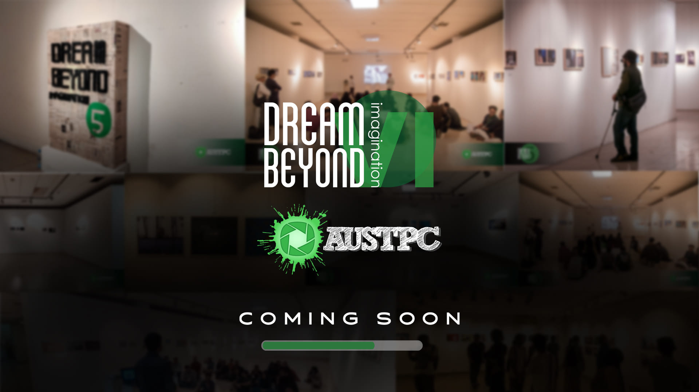
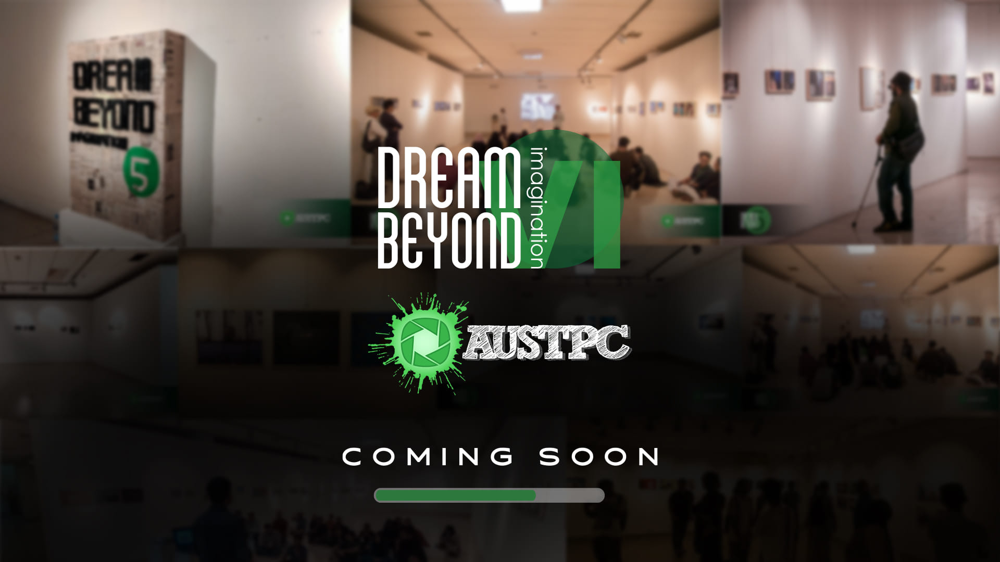

Hear from Our Club Members
Discover the experiences of our dedicated AUST club members. Their stories reflect the passion, creativity, and leadership that thrive within our diverse student clubs, fueling both personal and community growth.

“Joining the Photography Club opened up new opportunities for me to explore my creativity. It’s more than just a hobby—it’s where I found my passion!”
Sarah Ahmed
Photography Club Member
“Being part of the Debate Club not only sharpened my critical thinking, but it also gave me the confidence to speak in front of large audiences.”
Kamal Hossain
Debate Club President
“The Tech Club is where I found my tech-savvy peers. Together, we’ve built incredible projects and learned valuable skills that will last a lifetime.”
Aisha Rahman
Tech Club Vice PresidentRead About Our Clubs at AUST
Stay updated on the latest news and events happening across the diverse range of clubs at AUST.
Get insights into their activities, accomplishments, and upcoming events.

AUST Debating Club
The Debating Club sharpens students' critical thinking and oratory skills through regular debate competitions, fostering a spirit of healthy argumentation.
Read More
AUST Cultural Club
The Cultural Club celebrates diversity by organizing festivals, events, and performances that showcase the rich heritage and traditions of different cultures.
Read More
AUST The Innovation & Design Club
The Innovation & Design Club (IDC) encourages creativity and technical prowess by engaging students in design challenges, innovation projects, and competitions.
Read More
AUST Photography Club
The Photography Club captures moments and tells stories through the lens, conducting workshops, photowalks, and exhibitions to enhance photography skills.
Read More

AUST Programming Club
The Programming Club nurtures coding skills by organizing coding competitions, hackathons, and workshops to equip students with the latest in software development.
Read More

AUST Research And Publication Club
The Research Club fosters scientific inquiry and critical thinking by supporting research projects, providing resources, and holding symposiums on cutting-edge topics.